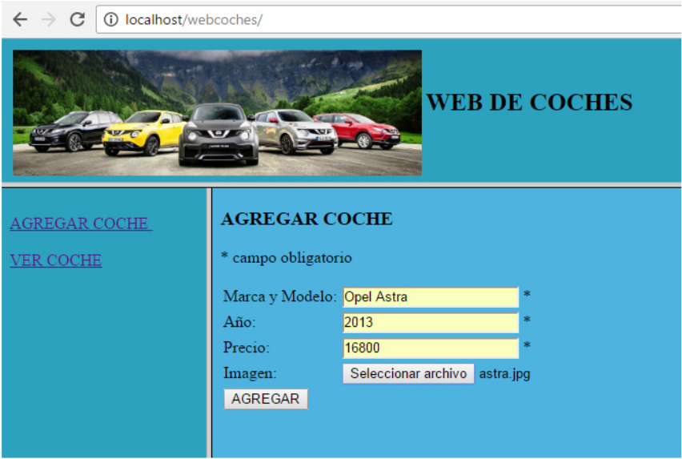

Ejercicio 1: Recuento
Elabora un programa llamado recuento.php capaz de leer un archivo de texto guardado en el servidor y mostrarle al usuario:
Puedes crear un archivo de texto con el siguiente contenido para realizar las pruebas:
Hola, soy un simple archivo
de texto. He sido creado como
ejemplo para probar el programa que
hay que crear como simulacro de
examen práctico.
Tengo 7 líneas, 36 palabras, XX
caracteres y 22 letras a/A.
Ejercicio 2 - Justificar
Codifica un programa llamado justifica.php que abra un archivo de texto alojado en el servidor y justifique a la derecha todas sus líneas. Las líneas justificadas serán almacenadas en otro archivo a crear con el mismo nombre pero añadiéndole la palabra “_justificado”:
Hola, soy un simple archivo
de texto. He sido creado como
ejemplo para probar el programa que
hay que crear como simulacro de
examen practico.
Tras ejecutar el programa, todo mi texto
quedara justificado hacia la derecha.
Archivo.txt
Hola, soy un simple archivo
de texto. He sido creado como
ejemplo para probar el programa que
hay que crear como simulacro de
examen practico.
Tras ejecutar el programa, todo mi texto
quedara justificado hacia la derecha.
Archivo_justificado.txt
Ejercicio 3: Web de Coches
Desarrolla una simple aplicación web en PHP que permita publicar coches y consultarlos. La web principal (archivo index.html) mostrará 3 frames con la siguiente estructura:
Las dos opciones del menú de la web serán:
-
Agregar coche: nos dirigirá hacia el archivo agregar.php; el cual muestra un formulario con los campos necesarios para añadir un coche: Marca y Modelo, Año, Precio y una Imagen.
Este archivo PHP deberá validar que ninguno de estos campos está vacío. Además, en el caso del año y del precio, éstos deben ser valores numéricos y no pueden ser negativos. Por último; la imagen a subir sólo podrá ser de tipo JPG, GIF o PNG; y no podrá pesar más de 200 KB.
- El archivo con la imagen del coche que se ha subido.
-
Un archivo de texto creado con el mismo nombre que la Marca y Modelo (de tipo txt). En él escribiremos todos los datos del coche agregado. P.e. el archivo “Opel Astra.txt” contendrá:
Opel Astra 2013 16800 ./upload/astra.jpg
Si se cumplen todas las condiciones; el script deberá guardar los siguientes archivos en una subcarpeta llamada upload :
-
Ver Coche: nos dirigirá hacia el archivo ver.php; el cual muestra un formulario con una lista desplegable en la que aparecen todos los coches agregados hasta el momento. Esta lista se cargará de valores cuando listemos los distintos archivos .txt de coches que existan en el directorio upload (ver la función scandir).
Si el usuario elige un coche de la lista, se le mostrará una tabla con los valores introducidos en su fichero .txt y con la imagen que se subió.